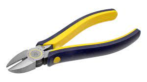
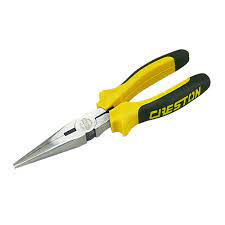

Unit of Competency 1: Install and Configure Computer Systems
Learning Outcome No.1: Assemble Computer Hardware
OCCUPATIONAL HEALTH AND SAFETY (OHS)
Information Sheet 1.1-1
Learning Objective:
After reading this information sheet, you must be able to:
- Explain the Occupational Health and Safety in your computer related works including dealing with electrical components of a computer.
INTRODUCTION:
Occupational Safety and Health (OSH) also commonly referred to as Occupational Health and Safety (OHS) or Workplace Health and Safety (WHS) is an area concerned with the safety, health and welfare of people engaged in work or employment. The goals of occupational safety and health programs include fostering a safe and healthy work environment. OHS may also protect co-workers, family members, employers, customers, and many others who might be affected by the workplace environment. In the United States, the term occupational health and safety is referred to as occupational health and occupational and non-occupational safety and includes safety for activities outside of work.
What is OHS and why is it necessary?
OHS or OH&S stands for Occupational Health and Safety, it is a cross-disciplinary area concerned with protecting the safety, health and welfare of people engaged in work or employment.
OHS relating to Installing computer systems and networks:
- Safety on handling computer components and devices
- Safety on connecting power connectors
- Check the proper voltage for every device
- Check the electrical connection for faulty wirings
- Use power surge protector or suppressor
- Use proper screw and screwdrivers for each component
- Hold CPU components and CD‟s/DVD‟s on its edges or in its bracket
- Put extra care in dismantling and returning the IO shield
Safety Precautions Dealing with Electrical Components of Computer
- Disconnect all power before performing hardware inspections
- Before starting work, unplug the power cord
- Never assume that power has been disconnected from a circuit
- Always look carefully for possible hazards in your work
- Discharge static electricity
- If an electrical accident occurs, use caution and switch off power
Safety Inspection Guide
- Check exterior covers for damage (loose, broken, or sharp edges)
- The power cord should be the appropriate type
- Insulation on the power cord must not be frayed or worn out
- Remove the cover and check for any obvious alteration
- Check for worn out, frayed or pinched cables
- Check that the power-supply cover fasteners have not been removed or tampered with
OHS for Effective Computer Troubleshooting
- What you wear might save you!
- Electro-Static Discharge (ESD) is not your best friend!
- Working Safely with Electricity!
Information Sheet 1.1-2
HANDTOOLS
Side Cutter Pliers

A tool used for cutting or trimming of connecting wires or terminal leads in the circuit board.
Long Nose Pliers

Used for holding, bending and stretching the lead of electronics component or connecting wire.
Crimping Tool
A tool made of metal with plastic-rubber handle, used to press into small folds, to frill, to corrugate.
Tweezers
A tool used to hold small sensitive parts of a computer.
Cutter
A tool used for cutting wires.
Flat Screw Driver
A tool used to drive or fasten negative slotted screws.
Philips Screw Driver
A tool used to drive or fasten positive slotted screws.
Volt-Ohms-Millimeter (VOM)
A measuring instrument used by technicians for measuring current, voltage, and resistance.
LAN Tester
A device used to test the network connection.
Anti-Static Wrist Wrap
A device used to eliminate electrostatic discharge in your work area.
Soldering Pencil
A tool used to join two or more metal conductors with the support of soldering lead melted around it.
Desoldering Tool
A tool used to unsolder unwanted parts or components in the circuit with the support of a soldering pencil.
Information Sheet 1.1-3
PERSONAL PROTECTIVE EQUIPMENT
Learning Objective: After reading this information sheet, you must be able to:
- Discuss and explain the Personal Protective Equipment in your computer related works.
INTRODUCTION:
Personal protective equipment (PPE) refers to protective clothing, helmets, goggles, or other garments designed to protect the wearer's body from injury by blunt impacts, electrical hazards, heat, chemicals, and infection, for job-related occupational safety and health purposes, and in sports, martial arts, combat, etc.
To protect anyone from danger by working any electrical activities, protective equipment such as safety shoes, goggles, hard hats, and gloves are issued. The use of this equipment is mandatory on certain activities. Their use is a MUST, and there is no question about that. Be sure to USE THEM on any designated activity WHERE they are REQUIRED. They can protect you from a lot of harm.
Importance of Personal Protective Equipment:
- The type of personal protective equipment (PPE) needed when using hand tools depends on the nature of the task. At a minimum, eye protection should always be worn.
- The use of hand protection may also be appropriate to provide protection against cuts, abrasion, and repeated impact.
The purpose of personal protective equipment is to reduce exposure to hazards.
Categories of Personal Protective Equipment:
- Eye and Face Protection: This will be used to avoid being exposed to a large number of hazards that pose danger to their eyes and face. Then to ensure that workers have appropriate eye or face protection if they are exposed to eye or face hazards from flying particles, molten metal, liquid chemicals, acids or caustic liquids, chemical gases or vapors, potentially infected material or potentially harmful light radiation.
- Safety spectacles. These protective eyeglasses have safety frames constructed of metal or plastic and impact-resistant lenses. Side shields are available on some models.
- Goggles. These are tight-fitting eye protection that completely cover the eyes, eye sockets and the facial area immediately surrounding the eyes and provide protection from impact, dust, and splashes. Some goggles will fit over corrective lenses.
- Face shields. These shields protect against nuisance dusts and potential splashes or sprays of hazardous liquids but will not provide adequate protection against impact hazards. Face shields used in combination with goggles or safety spectacles will provide additional protection against impact hazards.
- Foot and Leg Protection: Used for possible foot or leg injuries from the Moist floors, Non-grounded Power Extension cables and Power Surge that you might get serious injuries.
- Safety shoes: Safety shoes to be used electrically conductive to prevent the buildup of static electricity in areas with the potential for explosive atmospheres or nonconductive to protect workers from workplace electrical hazards.
- Hand and Arm Protection: If a workplace hazard assessment reveals that workers face potential injury to hands and arms that cannot be eliminated through work activity and practice controls. Working Gloves with a plastic rubber is one of the examples of Hand and Arm Protection Equipment's that are usually used in any electrical working activities.
- Body Protection: This is used to protect possible bodily injury in the workplace. Workers must wear appropriate body protection while performing their jobs. In addition to cuts and radiation, it avoids some electrical charge leaks that cannot be eliminated.
Personal Protective Equipment includes:
- Safety Precautions
- Preventive Maintenance
- Protective Devices
- Accident Reports
Safety precautions:
Proper preparation is the key to a successful build. Before you begin, make sure that you have the tools you will need and secure a clear well-lit workplace. Gather all the components you'll be using and unpack them at the same time. Find a dry, well-ventilated place to do your work, you should choose an area without carpets, because it tends to create static electricity. Always keep in mind that personal protection is one of the traits of a good technician.
Preventive Maintenance:
Maintenance is keeping something in working order. It includes repair, testing, adjusting, and replacing parts of a computer or a peripheral.
Types of Maintenance
- Active
- Passive
Anti-Static devices: These are the devices used to protect computer units from electrostatic discharge.
- Anti-static Wrist Strap: Also known as ESD wrist strap or ground bracelet, it is an antistatic device used to safely ground a person working on very sensitive electronic equipment, to prevent the buildup of static electricity on their body, which can result in electrostatic discharge (ESD).
- Anti-static Mat: An antistatic floor mat or ground mat is one of a number of antistatic devices designed to help eliminate static electricity. It does this by having a controlled low resistance: a metal mat would keep parts grounded but would short out exposed parts; an insulating mat would provide no ground reference and so would not provide grounding.
- Anti-static Bag: It is a bag used for shipping (usually electronic) components, which are prone to damage caused by electrostatic discharge.
An electrostatic-sensitive device (ESD) is any component which can be damaged by common static charges which build up on people, tools, and other non-conductors or semiconductors. ESD commonly also stands for electrostatic discharge. As electronic parts like computer central processing units (CPUs) become packed more and more densely with transistors the transistors shrink and become more and more vulnerable to ESD.
Power Surge Protector Devices: These are designed to protect electrical devices from voltage spikes. A surge protector attempts to limit the voltage supplied to an electric device by either blocking or by shorting to ground any unwanted voltages above a safe threshold.
- Automatic Voltage Regulators (AVR): These are designed to automatically maintain a constant voltage level. A voltage regulator may be a simple "feed-forward" design or may include negative feedback control loops. It may use an electromechanical mechanism, or electronic components. Depending on the design, it may be used to regulate one or more AC or DC voltages.
- Uninterruptible Power Supply (UPS): This is an electrical apparatus that provides emergency power to a load when the input power source, typically mains power, fails. A UPS differs from an auxiliary or emergency power system or standby generator in that it will provide near-instantaneous protection from input power interruptions, by supplying energy stored in batteries, super capacitors, or flywheels. The on-battery runtime of most uninterruptible power sources is relatively short (only a few minutes) but sufficient to start a standby power source or properly shut down the protected equipment. A UPS is typically used to protect hardware such as computers, data centers, telecommunication equipment or other electrical equipment where an unexpected power disruption could cause injuries, fatalities, serious business disruption or data loss.
Information Sheet 1.1-4
COMPONENTS OF A COMPUTER SYSTEM AND PERIPHERAL DEVICES
Learning Objectives: After reading this information, you must be able to identify the different components of a computer system and its peripheral devices.
Computer System
- Refers to a computer and all of the input, output, (peripherals), and storage devices that are connected to it.
Personal Computer System or simply a Personal Computer (PC) is a type of computer that is designed to be used by a single person at a time. This type of computer is also known as Desktop Computer.
Classification of System Components:
- Input Device: Usually a keyboard and mouse, the input device is the device through which data and instructions are entered.
- Output Device: A monitor, printer, or other device that lets you see what the computer has accomplished.
This section briefly examines all the components in a modern PC system unit. Here are the most important components needed to assemble a basic modern PC system and make it functional:
- Monitor (Display)
- CRT (Cathode Ray Tube)
- LCD (Liquid Crystal Display)
- Keyboard: The primary device on a PC that is used by a human being to communicate with and control a system.
- Mouse: A device that enables a user to point at or select items that are shown on the screen.
The following are the additional components of a PC system. This means that an already fully-functional PC system can stand on its own even without these components.
- CD-ROM, CD-R, or DVD-ROM Drive: CD- (Compact Disc) and DVD- (Digital Versatile Disc) ROM (Read Only Memory) drives are relatively high capacity removable media optical drives.
- Floppy Drive: A simple, inexpensive, low capacity removable media magnetic storage device.
- Sound Card: Today's PC audio hardware usually takes the form of an audio adapter on an expansion card that you install into a bus slot in the computer.
MICROPROCESSOR AND ITS PROCESSES
- Fetch: Retrieves an instruction from program memory.
- Decode: CPU fetches from memory is used to determine what the CPU will be doing. In the decode step, the instruction is broken up into parts for processing.
- Execute: Various portions of the CPU are connected so they can perform the desired operation.
- Writeback: Returns the results of the execute step to memory.
Peripheral Devices
A peripheral is a type of computer hardware that is added to a host computer in order to expand its abilities. More specifically, the term is used to describe those devices that are optional in nature, as opposed to hardware that is either demanded, or always required in principle.
The term also tends to be applied to devices that are hooked up externally, typically through some form of computer bus like USB. Typical examples include joysticks, printers, and scanners. Devices such as monitors and disk drives are not considered peripherals because they are not truly optional, and video capture cards are typically not referred to as peripherals because they are internal devices.
Printers
A computer printer is a computer peripheral device that produces a hard copy (permanent human-readable text and/or graphics, usually on paper) from data stored in a computer connected to it.
Scanners
A scanner is a device that analyzes a physical image (such as a photograph, printed text, or handwriting) or an object (such as ornament) and converts it to a digital image.
Parts and Functions of Computer System
Hardware
- Casing: A computer case contains the framework to support a computer's internal components while providing an enclosure for added protection.
- Power Supply: The power supply converts alternating-current (AC) power coming from a wall outlet into direct-current (DC) power, which is a lower voltage.
3. Motherboard The motherboard is the main printed circuit board. It contains the buses, or electrical pathways, found in a computer. These buses allow data to travel between the various components that comprise a computer. A motherboard is also known as the system board, backplane, or main board.
The motherboard accommodates the central processing unit (CPU), RAM, expansion slots, heat sink/fan assembly, BIOS chip, chip set, and the embedded wires that interconnect the motherboard components. Sockets, internal and external connectors, and various ports are also placed on the motherboard.
The form factor of motherboards pertains to the board's size and shape. It also describes the physical layout of the different components and devices on the motherboard. Motherboards have various form factors:
- Advanced Technology (AT)
- Advanced Technology Extended (ATX)
- Smaller footprint than Advanced Technology Extended (Mini-ATX)
- Smaller footprint than Advanced Technology Extended (Micro-ATX)
- Low-Profile Extended (LPX)
- New Low-Profile Extended (NLX)
- Balanced technology Extended (BTX)
An important set of components on the motherboard is the chip set. The chip set is composed of various integrated circuits attached to the motherboard that control how system hardware interacts with the CPU and motherboard. The CPU is installed into a slot or socket on the motherboard. The socket on the motherboard determines the type of CPU that can be installed.
The chip set of a motherboard allows the CPU to communicate and interact with the computer's other components and to exchange data with system memory (RAM), hard-disk drives, video cards, and other output devices. The chip set establishes how much memory can be added to a motherboard. The chip set also determines the type of connectors on the motherboard.
Most chip sets are divided into two distinct components, Northbridge and Southbridge. What each component does varies from manufacturer to manufacturer, but in general the Northbridge controls access to the RAM, video card, and the speeds at which the CPU can communicate with them. The video card is sometimes integrated into the Northbridge. The Southbridge, in most cases, allows the CPU to communicate with the hard drives, sound card, USB ports, and other input/output (I/O) ports.
4. Central Processing Unit - The central processing unit (CPU) is considered the computer’s brain. It is sometimes called the processor. Most calculations take place in the CPU. In terms of computing power, the CPU is the most important element of a computer system. CPUs come in different form factors, each style requiring a particular slot or socket on the motherboard. Common CPU manufacturers include Intel and AMD.
The CPU socket or slot is the connector that is the interface between the motherboard and the processor. Most CPU sockets and processors in use today are built around the pin grid array (PGA) architecture, in which the pins on the underside of the processor are inserted into the socket, usually with zero insertion force (ZIF). ZIF refers to the amount of force needed to install a CPU into the motherboard socket or slot. Slot-based processors are cartridge-shaped and fit into a slot that looks similar to an expansion slot.
The CPU executes a program, which is a sequence of stored instructions. Each model of processor has an instruction set, which it executes. The CPU executes the program by processing each piece of data as directed by the program and the instruction set. While the CPU is executing one step of the program, the remaining instructions and the data are stored nearby in a special memory called cache. Two major CPU architectures are related to instruction sets:
- Reduced Instruction Set Computer (RISC): Architectures use a relatively small set of instructions, and RISC chips are designed to execute these instructions very rapidly.
- Complex Instruction Set Computer (CISC): Architectures use a broad set of instructions, resulting in fewer steps per operation.
Some CPUs incorporate hyper threading to enhance the CPU's performance. With hyper threading, the CPU has multiple pieces of code being executed simultaneously on each pipeline. To an operating system, a single CPU with hyper threading appears to be two CPUs.
A CPU's power is measured by its speed and the amount of data it can process. A CPU's speed is rated in cycles per second. The speed of current CPUs is measured in millions of cycles per second, called megahertz (MHz), or billions of cycles per second, called gigahertz (GHz). The amount of data that a CPU can process at the one time depends on the size of the processor data bus. This is also called the CPU bus or the front-side bus (FSB). The wider the processor data bus, the more powerful the processor. Current processors have a 32-bit or 64bit processor data bus.
Overclocking is a technique used to make a processor work at a faster speed than its original specification. Overclocking is an unreliable way to improve computer performance and can damage the CPU.
MMX is a set of multimedia instructions built into Intel processors. MMX-enabled microprocessors can handle many common multimedia operations that normally are handled by a separate sound or video card. However, only software specially written to call MMX instructions can take advantage of the MMX instruction set.
The latest processor technology has caused CPU manufacturers to find ways to incorporate more than one CPU core into a single chip. Many CPUs can process multiple instructions concurrently:
- Single-core CPU: One core inside a single CPU chip that handles all the processing capability. A motherboard manufacturer may provide sockets for more than a single processor, providing the ability to build a powerful multiprocessor computer.
- Dual-core CPU: Two cores inside a single CPU chip, in which both cores can process information at the same time.
5. Cooling System Electronic components generate heat. Heat is caused by the flow of current within the components. Computer components perform better when kept cool. If the heat is not removed, the computer may run slower. If too much heat builds up, computer components can be damaged. Increasing the airflow in the computer case allows more heat to be removed. A case fan is installed in the computer case to make the cooling process more efficient.
In addition to case fans, a heat sink draws heat away from the core of the CPU. A fan on top of the heat sink moves the heat away from the CPU.
Other components are also susceptible to heat damage and sometimes are equipped with fans. Video adapter cards produce a great deal of heat system. A metal plate is placed over the processor, and water is pumped over the top to collect the heat that the CPU creates. The water is pumped to a radiator to be cooled by the air and then is recirculated.
6. ROM and RAM ROM and RAM provide memory for a vast amount of computer equipment. They come in different memory sizes and module sizes and have different features.
ROM (Read-only Memory) - chips are located on the motherboard. ROM chips contain instructions that the CPU can access directly.
Assembly Procedure for a Desktop Computer System
- Prepare the Computer Case:
- Prepare the case from the box and examine it for any visible damage.
- Ensure all relevant hardware, including front panel switches, LEDs, and speaker, are present.
- If everything is okay, remove the case cover.
- Thoroughly inspect the power supply and cables if included with the case.
- Clean the case to remove any dust, preferably with compressed air.
- Install legs and all necessary hardware.
- Examine Computer Motherboard:
- Check the system board for any damage.
- Ensure the mainboard manual and mounting hardware are present.
- Consider using an ATX Mainboard for compatibility.
- Matching Holes:
- Locate the metallic plate in the computer case where the motherboard will be screwed to.
- Identify the holes on both the metallic plate and the motherboard.
- Install screw nuts on all plate holes that match a hole on the motherboard.
- Install Computer Processor (CPU):
- Handle the CPU gently.
- Lift the lever on the CPU socket and ensure proper orientation of the CPU.
- Place the CPU in the socket, ensuring no bent pins.
- Lock the lever back down to secure the CPU.
- Installing the CPU Fan:
- Position the heatsink onto the retention mechanism.
- Mount the fan on top of the heatsink and secure it with clips.
- Flip the lever to lock the heatsink in place and connect the CPU cooling fan connectors.
- Open the Load Plate:
- Use thumb and forefinger to hold the hook of the lever and lift it up.
- Open the load plate carefully, ensuring not to touch the contacts.
- Install Computer Internal Drives (Hard Drive, Floppy Drive, CD-ROM Drive/DVD-ROM Drive):
- Install the boot hard drive on the primary IDE channel and set it as "Master" using the jumper.
- Securely install the hard drive in the internal 3.5 inch drive bay using provided screws.
- Connect the remaining end of the primary IDE cable to the drive, ensuring alignment with Pin 1 on the drive connector.
- Connect the ATX 20-24 Pin Computer Power Supply Cable to the motherboard.
- If applicable, attach the 4-pin 12V connector for extra power needed by the CPU.
- Install Computer Video Card:
- Ground yourself to prevent static electricity damage and avoid using a magnetized screwdriver.
- Remove the expansion slot cover from the computer case.
- Insert the Video/Graphics Card into the AGP slot, ensuring it is securely seated.
- Secure the card to the computer case using a small screw.
- Install Cheap Computer Sound Card:
- Ground yourself to prevent static electricity damage and avoid using a magnetized screwdriver.
- Remove the expansion slot cover from the computer case.
- Install the sound card in a PCI slot away from the video card to prevent heat issues.
- Secure the sound card to the computer case.
- Connect Audio Cable:
- Finally, connect the audio cable to the DVD-ROM drive and the sound card.
- You have followed the Build Your Own Cheap Computer tutorial and you have installed the internal components. You are now ready to install the external peripherals.
- A Power Connector: The power connector is a 3-prong male connector which enables you to connect a power cable to the computer Port A to obtain power from an electrical outlet.
- B Power Supply Fan: The power supply fan provides adequate ventilation for the power supply by exhausting hot air from it.
- C Mouse Port: The mouse is a pointing device that enables you to move and select items on the screen. It is connected to Port C, also known as a mini-DIN or PS/2 connector.
- D Keyboard Port: The keyboard, an input device, is connected to Port D, also known as a mini-DIN or PS/2 connector. Older computers may have a larger port known as a DIN connector.
- E USB Port: USB (Universal Serial Bus) is an external bus that supports data transfer rates of up to 12 Mbps. It allows connection of up to 127 peripherals simultaneously and supports hot-swapping.
- F Parallel Port (Printer Port): A 25-pin female connector (DB-25) for connecting external devices like printers, supporting bi-directional communications.
- G Serial Port: An interface for serial communication transmitting 1 bit at a time, used for peripherals like modems, mice, etc.
- H Game Port: A 15-pin female analog port used for connecting game controllers or MIDI devices, typically located on the sound card.
- I Monitor Port: A 15-pin female connector for connecting the monitor to display images and text generated by the computer.
- J Ethernet Port: Accepts an Ethernet cable for communication on a TCP/IP network, typically located on the Network Interface Card (NIC) or integrated on the motherboard.
- K Modem: A device used to send digital data over a phone line, essential for internet access or email communication.
Learning Outcome No.2: Prepare installer
Prepare Installer
PREPARE INSTALLER USING RUFUS
Bootable Drive
A bootable drive is any piece of hardware that can read or contains the files required for a computer to start. For example, a hard drive, floppy disk drive, CD-ROM drive, DVD drive, and USB jump drive are all considered bootable devices.
Rufus
Rufus is a utility that helps format and create bootable USB flash drives, such as USB keys/pendrives, memory sticks, etc.
ISO Image File
An ISO image file, or ISO file, is the image of an entire CD or DVD, containing the complete contents of the optical disc in a single file. It is produced by copying all information from the disc.
Windows File Systems
- FAT (File Allocation Table): Created by Microsoft in 1977, FAT is a file system maintained by the operating system on a hard disk, providing a map of clusters where a file is stored.
- NTFS (New Technology File System): Used by the Windows NT operating system for storing and retrieving files on a hard disk. NTFS offers improvements over FAT in terms of performance, extendibility, and security.
Partition Table Formats
- Master Boot Record (MBR) format: In use since the early 1980s, MBR supports a maximum of four primary partitions up to 2TB in size.
- GUID Partition Table (GPT) format: Newer and supports much larger disks, up to a theoretical limit of 9.4 zettabytes (ZB) or nearly 10 billion terabytes. Windows currently limits GPT partitions to 256TB.
Requirements for Creating a Bootable Drive
- Windows 10 in ISO format
- Rufus software for creating the bootable drive
- USB flash drive (at least 4GB)
- Desktop computer


Learning Outcome No.3: Install operating system and drivers for peripherals/ devices
Steps in Installing Operating System
Steps in Installing Drivers